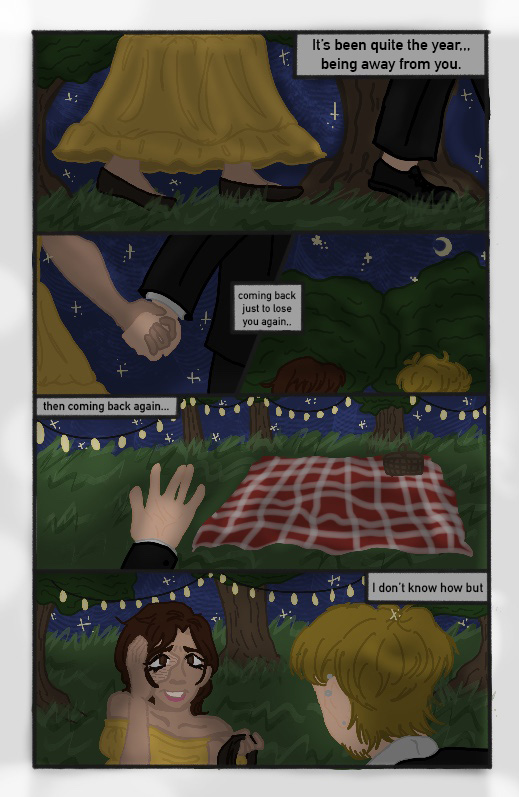

My story I’d like to tell is one of a character that I’ve been building up for a while now. This story follows Angelica (from her perspective) and Brian as they’re at the peak of finally feeling normal in their relationship again. Brian decides to take her back to the place where they first met for a late-night date and they sit in the comfortably silence before he turns to Angelica with a small box, asking her to be his bride as he couldn’t imagine himself losing her again. She says yes and they spend the night under the stars.
